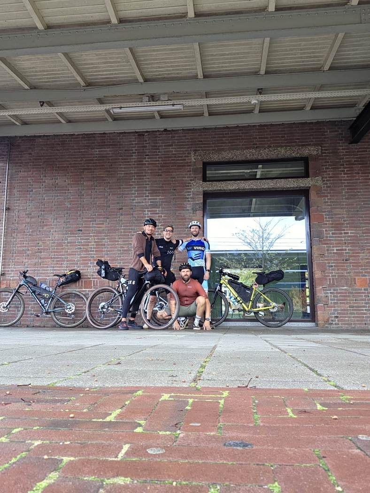
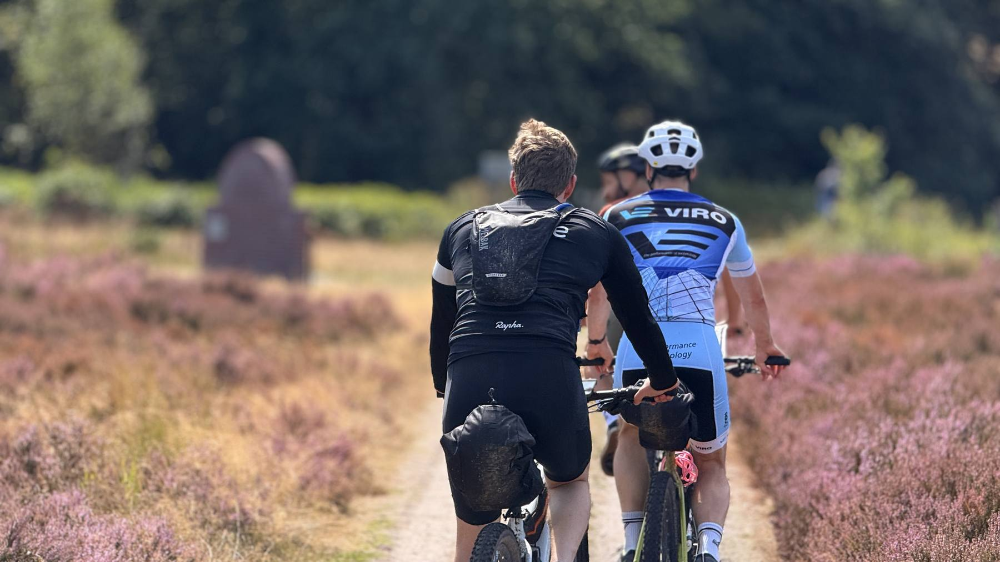

2026 Volbracht

Green Divide
Bike Packing Life Hacking 🚀 · 21–24 augustus · Naarden‑Bussum → Zwolle, gravel over de Heuvelrug en de Veluwe.
317km
1.330hm
4dagen
4rijders

Vijf man, één groepsapp en minstens één tripje per jaar. Tot we 80 zijn en in ons kistje gaan liggen.
Elk mannentripje krijgt zijn eigen pagina. Tik op een trip voor de route, de verhalen en de foto's.

Bike Packing Life Hacking 🚀 · 21–24 augustus · Naarden‑Bussum → Zwolle, gravel over de Heuvelrug en de Veluwe.
Volgende halte: sneeuw. Bestemming, data en de rest volgen zodra de groepsapp het eens is.
Naar de pagina →
Kamperland-weekend deel twee? Met de fiets naar de Alpen? Ideeën welkom in de groepsapp — de tijdlijn loopt door tot we 80 zijn.
Aanwezig sinds de groepsapp. Afmelden kan, maar wordt genoteerd.
Regel één van de omaversie: max vier uur per dag op de fiets, en dan lekker uitgesmeerd. Regel twee: de pannenkoek is het calorie-anker. Regel drie: er is geen jacuzzi.